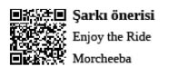

Case Study Profesyonelleri
Hayatın her anını süslü bir paketle
kaplayan profesyoneller
Case Study
Case Study, profesyonel hayatta yapılan tüm işlerin, sorumlu yöneticinin ve / veya ilgili birim çalışanlarının kariyerine katma değer sağlayabilmesi için, şirket stratejileri, öncelikleri ve hedefleri doğrultusunda makyajlanarak, paketlenip sunulan çıktısıdır.